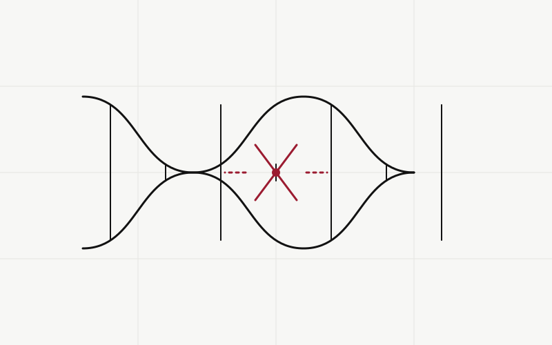
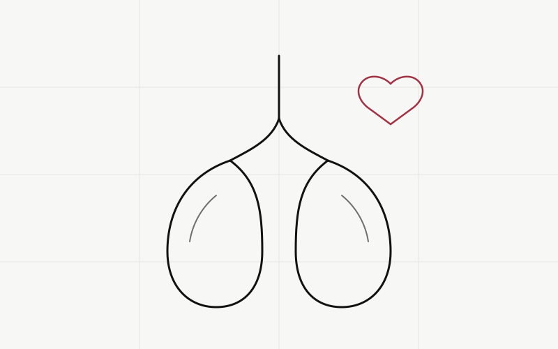
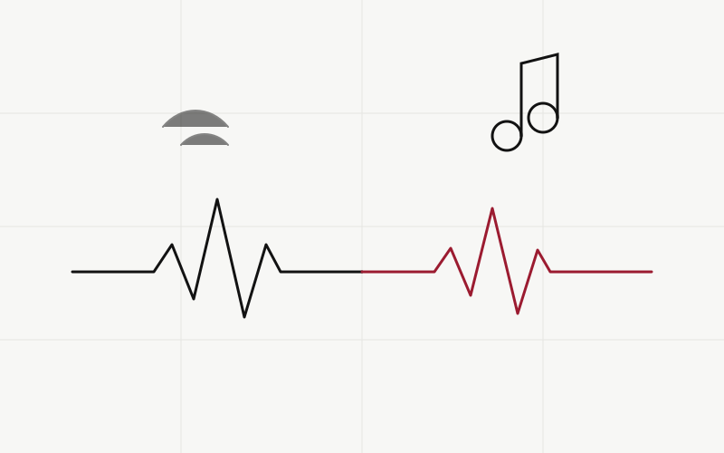

Sleep Deprivation and Academic Performance Among High School Students: A Cross-Sectional Analysis
A survey of 412 students linking short sleep duration with lower GPA and greater daytime fatigue.
Every paper published by our members — original studies, literature reviews, and survey research, each vetted by our student editorial board.
A survey of 412 students linking short sleep duration with lower GPA and greater daytime fatigue.

Literature Review · GeneticsA review of gene-editing trials, their outcomes, and the ethical questions they raise.

Survey Study · Public HealthSelf-reported wheeze and shortness of breath were twice as common among current vapers.

Pilot Study · CardiologyA 30-minute listening session was associated with modest improvements in stress scores.
We synthesized 43 surveillance studies to map rising resistance in E. coli and S. aureus.
Nearly half of respondents said they would hesitate to tell a friend they were struggling.
Moderate caffeine intake correlated with faster reaction times, with diminishing returns above 200 mg.
Virtual visits expand access for teens, but privacy concerns and the digital divide remain.
Predictive models flag sepsis hours earlier on average — but real-world uptake lags behind.
Students who could interpret labels correctly made measurably better snack choices in a mock task.
An introduction to methylation, histone modification, and the evidence linking stress to heritable change.
Higher daily screen time was weakly associated with elevated resting heart rate in 87 teen volunteers.